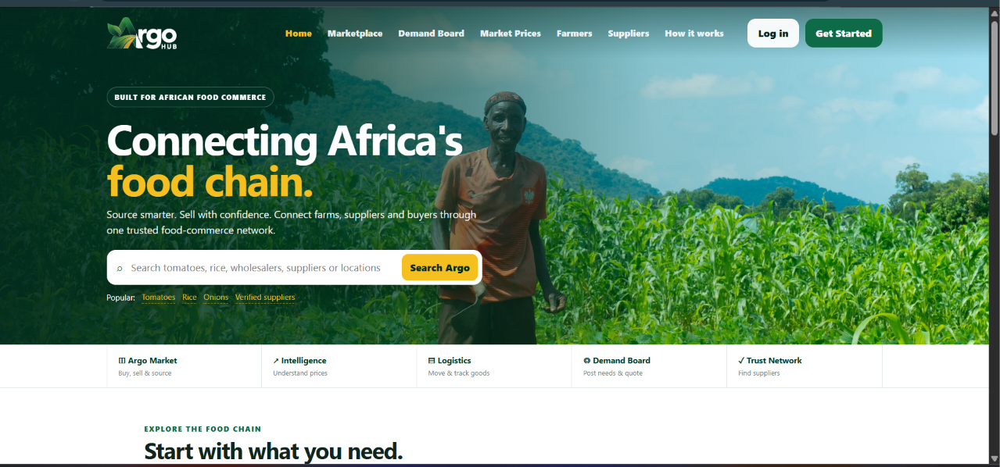
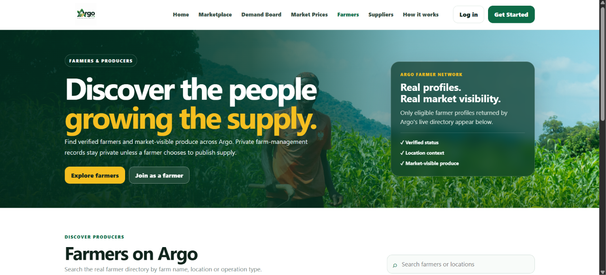

Marketplace
Produce discovery and connections between buyers and suppliers.
01 · ORIGINAL PRODUCT · AGRICULTURAL COMMERCE
A digital food-commerce network designed to connect farmers, suppliers and buyers, making agricultural trade easier to discover, coordinate and grow.

THE IDEA
Argo Hub is being built to bring different participants in the agricultural supply chain into one digital environment. Buyers can discover produce and suppliers, suppliers can manage selling and purchasing activity, and farmers can present market-visible produce while managing their farm operations.
The product brings marketplace discovery together with supporting tools for demand, market intelligence, logistics and trust.
FARMER EXPERIENCE
The farmer directory gives eligible producers a public-facing presence while keeping private farm-management information separate from what is shown to the wider marketplace.

PRODUCT AREAS
Produce discovery and connections between buyers and suppliers.
Buyer, Seller and Farmer experiences shaped around different responsibilities.
Private operational tools alongside optional public supply visibility.
Verification concepts, delivery coordination and supporting marketplace workflows.
MY CONTRIBUTION
My work centres on translating the product direction into a functioning web experience: implementing interfaces, connecting user journeys, shaping role-based workspaces and refining the platform as its features evolve.
I also worked on the Paystack integration setup and test-mode checkout flow. This portfolio describes testing and integration preparation only; live payments have not been enabled.
Argo Hub is an ongoing product. The screenshots shown here are from the current build, and the platform continues to develop.
Visit Argo Hub ↗Continue exploring
Next project: ANIMXS ↗All selected work ↗